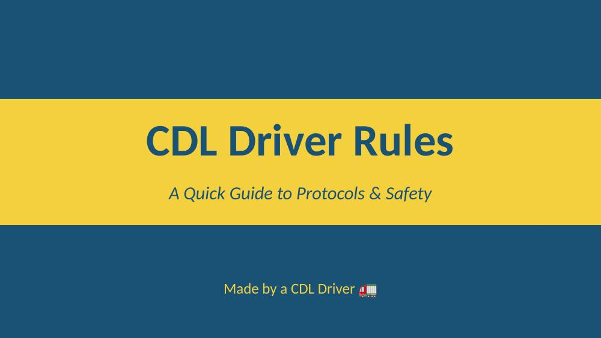

PowerPoint was the most valuable tool I have learned to use during this module to present information in an organized and understandable manner. The use of slides, transitions, animation, and a consistent design theme will create a more engaging presentation that remains on topic. There are many reasons why people give presentations, such as academic purposes (school), professional development (job training), business-related activities (meetings), and safety education (safety lessons). My CDL Driver Rules slideshow is one example of how I could utilize PowerPoint to teach drivers about key driving rules in a clear and concise manner that they would be able to easily comprehend and retain.